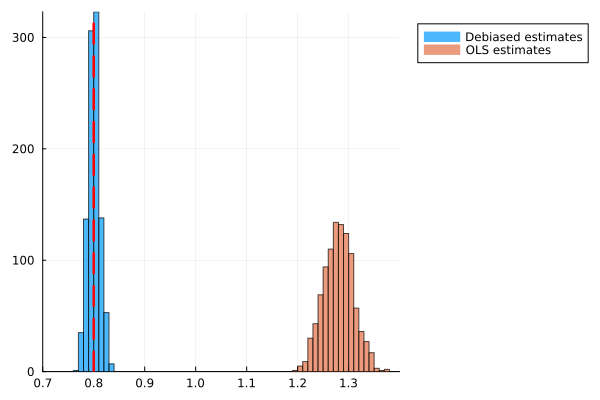

|

|
Estimating spillovers from sampled connections
Show that estimators for spillover effects in linear and spatial autoregressive models are heavily biased when reserchers oversample or undersample links between individuals.
Introduce a debiasing procedure for estimates when researchers know mean number of missing links per individual, and way for researchers to quantify the number of mean
number of missing links per individual that would cause a bias of a given size. Apply the method to re-estimate biases in estimates of the propagation of climate shocks
using firms' self-reported customers. Find that existing estimates are 3-4 times too large.
|

|
Estimating optimal disease mitigation with endogenous network response (with Michael Konig, Ozan Candogan, and Frank Takes)
We introduce a SIR-type model of the spread of disease on a social network where susceptibles rewire links away from the infected.
With rewiring, optimal lockdowns are shorter, more targeted and more efficient. We introduce a simulated moments estimator to estimate parameters when rewiring is unobserved.
As an illustration, we estimate counterfactual optimal policy for the Netherlands during the second wave of COVID-19.
|

|
How do expectations affect learning about fundamentals? Some experimental evidence
We test how individuals with incorrect beliefs about their ability learn about an external parameter (`fundamental') when they cannot
separately identify the effects of their ability, actions, and the parameter on their output. Heidhues et al.(2018) argue that learning
makes overconfident individuals worse off as their beliefs about the fundamental get less accurate, causing them to take worse actions.
In our experiment, subjects take incorrectly-marked tests, and we measure how they learn about the marker's accuracy over time. Overconfident subjects
put in less effort, and their beliefs about the marker's accuracy got worse, as they learnt. Beliefs about the proportion of correct answers marked
as correct fell by 0.05 over the experiment. We find no effect in underconfident subjects.
|